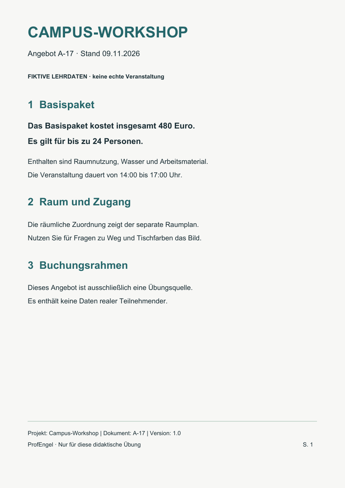

Dokumenten-Detektiv · 7 Minuten
Eigenständig: Beide Dateien herunterladen, in ChatGPT Desktop anhängen, den Prompt einfügen. Danach die Fundstellen im Original prüfen. Kein zusätzliches Programm und keine Installation nötig.
Die Textquelle
Campus_Workshop_Angebot.pdf ↓Fiktives Angebot mit echter Textschicht, eine Seite.

Das Bild
Campus_Raumplan.png ↓Weg und Tischfarben nur aus dem Bild ablesen.

Vollständiger Auftrag
Gegenprobe
- Ist jeder Textfakt mit Datei und Seite belegt?
- Wurde das Bild wirklich berücksichtigt?
- Wird Fehlendes als „nicht belegt“ markiert?
- Enthält die Merkkarte Projekt, Stand und Quelle?
Nach dem Versuch: Lösung & Prüfbogen ↗
Alles offline lesbar. Für den echten ChatGPT-Aufruf ist Internet und ein geeigneter Zugang nötig. Bei Upload-/Modellausfall die Originale selbst prüfen. Die vorgeschriebene Sicherheitsregel im Prompt allein bietet keine verlässliche Prompt-Injection-Abwehr.